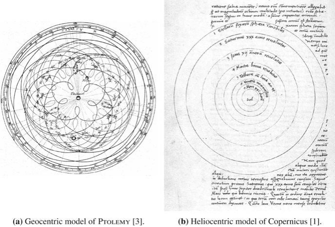
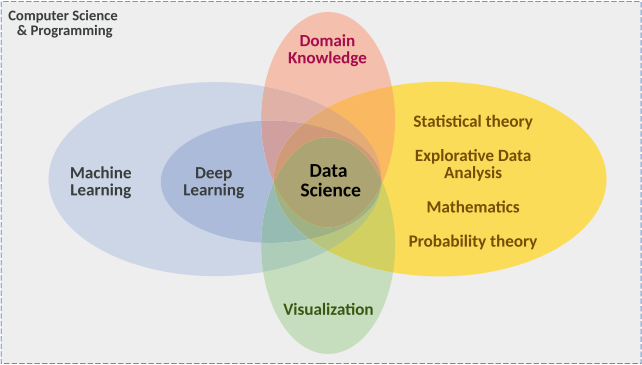
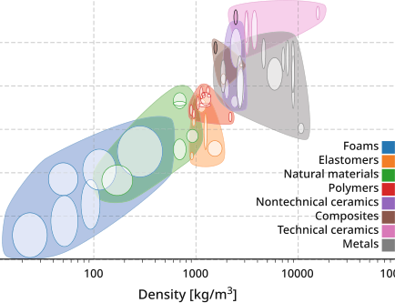
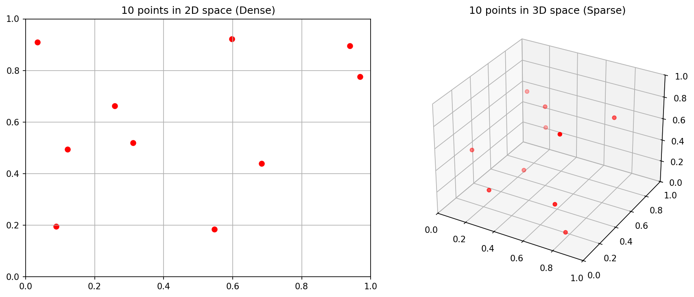

Machine Learning in Materials Processing & Characterization
Unit 1: What Makes Materials Data Special?
Prof. Dr. Philipp Pelz
FAU Erlangen-Nürnberg


01. Welcome to ML-PC
Unit 1: What Makes Materials Data Special?
Today’s Learning Journey:
- From Sumerian clay to Kepler’s laws — the long history of data
- What is Materials Data Science?
- Why materials ML is uniquely hard
- White-Box, Black-Box, and Grey-Box modeling
- The CRISP-DM workflow for the laboratory
02. Learning Outcomes
By the end of this unit, you can:
- Explain the historical transition from descriptive to data-driven models
- Define Materials Data Science at the intersection of ML, statistics, and domain knowledge
- Identify unique challenges: small data, high cost, noise, multi-modality
- Classify models into White-Box, Grey-Box, and Black-Box categories
- Apply the CRISP-DM process to structure a materials data project
- Differentiate between correlation and causality in materials systems
03. Course Positioning in SS26
- MFML: Mathematical foundations (the “how”)
- ML-PC: Applied ML for characterization & processing (the “where”)
- Materials Genomics: Computational materials discovery (the “what”)
04. The “Hype Cycle” vs. Lab Reality
- AI is everywhere in the news — but what about the lab?
- Most materials labs still operate with small datasets and manual analysis
- This course bridges the gap: from “textbook AI” to “lab-ready AI”
Note
The goal is not to replace domain expertise with ML — it is to amplify it.
05. Historical Roots of Data (I)
The First Data and Metadata
- 3400 BCE: Sumerian cuneiform tablets for counting sheep and grain
- Not just numbers — symbols represented context: units, objects, locations
- The first metadata: data about data Sandfeld, Stefan et al., (2024)
One of the first data visualization: summary account of silver for the governor written in Sumerian Cuneiform on a clay tablet. (From Shuruppak or Abu Salabikh, Iraq, circa 2,500 BCE. British Museum, London. BM 15826, courtesy Gavin Collins [10])
06. Historical Roots of Data (II)
From Gods to Crystal Spheres
- Ancient astronomy: celestial observations as the first “big data”
- Antikythera Mechanism (~100 BCE): analog computation for celestial prediction
- Models evolved: divine will → geometric spheres → mathematical laws
The key transition: from describing patterns to explaining them with models.

07. Kepler: The First Data Analyst
- 1609: Kepler inherited 25 years of Mars observations from Tycho Brahe
- He didn’t invent a new telescope — he invented a data-driven explanation
- Transition from descriptive (circles) to explanatory (ellipses)
The lesson: More data alone is not enough. You need the right model.

08. J. Tobias Mayer: The First Overdetermined System
- 1750: Moon libration study — more equations than unknowns
- The first “modern” use of overdetermined data systems
- Precursor to least squares regression (later formalized by Gauss)
Materials science today: we often have more measurements than parameters — this is a good problem to have!
09. Defining Materials Data Science
The Interdisciplinary Intersection
MDS sits at the center of:
- Machine Learning: Algorithms that learn patterns
- Statistics: Quantifying uncertainty and significance
- Computer Science: Handling large data volumes
- Domain Knowledge: The “Physics” that keeps ML grounded

10. The Ashby Map: Feature Engineering Before ML
- Michael Ashby (1992): Plotting material properties against each other
- Young’s Modulus vs. Density → material selection charts
- This is feature engineering without explicit ML!

Note
Domain knowledge tells you which features to plot. ML automates finding patterns in high-dimensional versions of this idea.
11. Recall from MFML: Model Types & Learning Tasks
- Models: Abstractions trading fidelity for simplicity.
- Spectrum: White-Box (physics) \(\leftrightarrow\) Grey-Box (hybrid) \(\leftrightarrow\) Black-Box (data-driven).
- Core Tasks: Supervised (regression/classification) vs Unsupervised (clustering/dimensionality reduction).
- Optimization: We minimize specific loss functions to fit models to data.
12. Think About This…
Question: You have a dataset of 50 tensile test curves. You want to predict yield strength from composition.
Should you use a white-box, black-box, or grey-box model?
Answer: Grey-box is likely best. 50 samples is too few for a deep neural network (black-box). Pure physics (white-box) can’t easily map composition to yield strength. A physics-informed approach (e.g., Hall-Petch + ML correction) leverages both.
13. Materials example 1: process→property regression
- Inputs: process parameters, composition, heat treatment metadata.
- Target: hardness / tensile strength (continuous).
- Risks: confounding from batch effects, hidden process controls.

14. Materials example 2: defect classification from images
- Inputs: microscopy images + acquisition metadata.
- Target: defect class / defect probability.
- Risks: class imbalance, label noise, instrument-specific artifacts.

15. Materials example 3: spectra interpretation task framing
- Inputs: spectral signal (possibly multimodal context).
- Targets: composition class, phase indicator, or property proxy.
- Risks: baseline drift, preprocessing leakage, calibration instability.

16. Parsimony and Occam’s Razor
“Among competing hypotheses, the one with the fewest assumptions should be selected.” McClarren, Ryan G., (2021)
- Overfitting: A model that memorizes training data but fails on new data
- Parsimony: Prefer the simplest model that explains the data
- Rule of thumb: Start simple, add complexity only when justified
Note
If a linear model works, don’t use a neural network.
17. The PSPP Paradigm
Processing → Structure → Property → Performance
- Nodes: Distinct data domains (images, spectra, logs)
- Edges: The ML tasks we want to solve
- Dependency: Structure mediates properties
18. The Multi-Scale Challenge
- Materials span 10 orders of magnitude: atoms (Å) to components (m)
- Each scale has its own data type:
- Atomic: DFT energies, electron microscopy
- Micro: Micrographs, EBSD maps
- Meso: Process logs, mechanical tests
- Macro: Component performance, field data
ML challenge: How do you connect information across scales?
19. The Multi-Modal Challenge
- A single sample produces many data types:
- Images: SEM, TEM, optical micrographs (2D/3D)
- Spectra: XRD, EELS, EDS (1D/4D)
- Time series: Temperature logs, force curves
- Scalars: Hardness, conductivity, composition
Fusion problem: How do you combine a micrograph with a spectrum with a process log into one model?
20. Small Data / High Cost
- A single TEM session can cost thousands of Euros
- Synthesizing a new alloy takes days to weeks
- Typical dataset sizes: 10–1000 samples (not millions!)
Contrast: ImageNet has 14 million images. A typical materials dataset has 50–500 samples.
Note
Materials data is precious and sparse. Every sample counts.
21. Measurement Noise and Artifacts in the Lab
- Beyond theoretical noise: Real laboratory data contains more than just statistical uncertainty.
- Systematic Errors: Instruments drift over time, calibration degrades.
- Physical Artifacts: Sample charging in SEM, sample contamination, beam damage.
These artifacts create epistemic uncertainty that must be managed through strict experimental protocols, not just more data.
22. The Curse of Dimensionality (I)
Thought experiment: You have 3 process parameters, each with 10 possible values.
- Full grid search: \(10^3 = 1{,}000\) experiments
- But if you have 10 parameters: \(10^{10} = 10{,}000{,}000{,}000\) experiments!
Even with 35 experiments, you’ve explored only \(\frac{35}{10^3} = 3.5\%\) of a 3-parameter space.
23. The Curse of Dimensionality (II)
- In high-dimensional space, data is sparse by default
- All points are approximately equidistant from each other
- Nearest-neighbor methods break down
- Materials data lies on a low-dimensional manifold — finding it is key

24. Data Scales (I): Nominal and Ordinal
- Nominal (names): Phase labels (FCC, BCC, HCP)
- No ordering, no arithmetic
- Ordinal (ordered names): Grain size categories (fine, medium, coarse)
- Ordering exists, but distances are undefined
ML impact: You cannot compute a meaningful “average” of nominal data. Choose your algorithms accordingly.
25. Data Scales (II): Interval and Ratio
- Interval (equal distances, no true zero): Temperature in Celsius
- 20°C is not “twice as hot” as 10°C
- Ratio (true zero): Temperature in Kelvin, mass, length
- 200 K is genuinely twice as hot as 100 K
The Sumerian connection: A number without its unit and scale is worthless — this was true in 3400 BCE and it’s true today Sandfeld, Stefan et al., (2024).
26. Metadata in the Lab
- Every measurement needs metadata:
- Instrument settings (voltage, magnification, exposure)
- Calibration history
- Environmental conditions (temperature, humidity)
- Sample preparation steps
Without metadata, your data is just noise with a timestamp.
27. Think About This: The “Failure Story”
True story: A neural network was trained to classify steel microstructures. It achieved 99% accuracy on the test set.
But it was actually learning the serial number of the microscope — each microscope was used for only one type of steel.
This is data leakage: the model finds a shortcut that correlates with the label but has no physical meaning.
Note
Always ask: “What is the model actually learning?”
28. Block C Recap
- PSPP structures the data flow in materials science
- Materials data is multi-scale, multi-modal, and sparse
- The Curse of Dimensionality means we can never sample enough
- Data scales and metadata constrain what operations are valid
- Data leakage is the silent killer — always check what the model learned
Block D: The Workflow — CRISP-DM for Labs
Slides 35–45
29. The CRISP-DM Standard
Cross-Industry Standard Process for Data Mining
- Originally developed for business analytics (1996)
- Adapted here for scientific laboratory workflows
- 6 phases forming a cycle (not a linear pipeline)
30. Phase 1: Scientific Understanding
- What is the scientific question?
- What would a useful answer look like?
- What decisions will the model inform?
- What is the Return on Insight (ROI)?
Industrial Example Neuer, Michael et al., (2024): Predicting machine failures to save material costs. The ROI depends on whether the savings outweigh the modeling timeline.
Bad: “Let’s apply ML to our data and see what happens.”
Good: “Can we predict yield strength from composition to reduce testing by 50%?”
31. Phase 2: Data Understanding
- Visualize raw data before anything else
- Check for:
- Missing values and outliers
- Measurement artifacts (drift, saturation)
- Class imbalance (90% of samples are one phase)
- Distribution of features
Example continued: What sensor data do we need? Are additional sensors required? Is the data accessible in the company database?
Rule: If you can’t explain what your raw data looks like, you’re not ready to model.
32. Phase 3: Data Preparation
- Cleaning: Remove or impute missing values
- Scaling: Normalize features to comparable ranges
- Encoding: Convert categorical variables (one-hot, label encoding)
- Splitting: Train / Validation / Test sets (carefully, avoiding leakage!)
Example continued: Cleaning faulty sensor readings and handling measurement drift before training.
Materials trap: Time-dependent data must be split chronologically, not randomly.
33. Phase 4: Modeling
- Select algorithm(s) appropriate for:
- Data size (small → simpler models)
- Data type (images → CNNs, tabular → gradient boosting)
- Interpretability requirements
- Start simple: Baseline before complexity
Example continued: Training a baseline classifier to detect anomalous process states from the sensor data.
A linear regression baseline that you understand is worth more than a neural network you don’t.
34. Phase 5: Evaluation
- Does the model generalize to new data?
- R² metric: Fraction of variance explained
- \(R^2 = 1 - \frac{\sum(y_i - \hat{y}_i)^2}{\sum(y_i - \bar{y})^2}\)
- Pitfalls of R²: Can be misleading with nonlinear data or outliers
- Cross-validation for small datasets
Example continued: Does the model meet the Key Performance Indicators (KPIs) set in Phase 1? How many false alarms are generated?
The real test: Does it work on data from a different lab / batch / instrument?
35. Phase 6: Deployment & Monitoring
- Integrating ML into the lab workflow:
- Real-time classification during microscopy
- Process control in a furnace
- Automated quality inspection
- Monitoring: Detecting model drift and out-of-distribution inputs
Example continued: Closing the loop — using the model’s predictions online to control production machines for better quality.
A deployed model needs ongoing validation — materials and processes change over time.
36. Correlation vs. Causality (I)
The “Ice Cream” Trap
- Observation: Ice cream sales and crime rates both increase in summer
- Spurious correlation: Ice cream does not cause crime
- Confounding variable: Heat (temperature) drives both
37. Correlation vs. Causality (II)
In Materials Science
- Does adding chromium cause increased hardness?
- Or is chromium a proxy for a specific heat treatment that refines grain size?
- The PSPP graph helps: trace the causal chain through Processing → Structure → Property
Randomized experiments (varying one factor at a time) are the gold standard for establishing causality — but expensive in materials science.
38. Scientific Trust and Explainability
- Peer reviewers will ask: “Why does your model make this prediction?”
- A black-box answer (“the neural network said so”) is not publishable
- Explainability methods: SHAP values, attention maps, feature importance
In safety-critical applications (aerospace, nuclear), unexplainable models are not allowed.
39. Block D Recap
- CRISP-DM provides a structured workflow for materials ML projects
- Start with a clear scientific question (Phase 1)
- Explore your data before modeling (Phase 2)
- Baseline before complexity (Phase 4)
- Generalization is the real test — not training accuracy (Phase 5)
- Always distinguish correlation from causality
Block E: Exercise Bridge
Slides 46–50
40. Exercise Preview: MDS-1 Tensile Test Dataset
- Real dataset: tensile tests on steel samples
- Features: composition, processing parameters
- Target: yield strength, ultimate tensile strength
- Your task: Build a baseline regressor and evaluate it honestly
41. Exercise Tasks
- Data Understanding: Inspect the dataset — what scales? what distributions?
- Identify data types: Nominal, Ordinal, Interval, Ratio
- Build a baseline: Simple linear regression
- Evaluate honestly: R², residual plots, cross-validation
- Check for leakage: Are there hidden correlations?
42. Checklist for Trustworthy Materials ML
43. Unit 1 Summary: Top Takeaways
- Materials data is precious and sparse — every sample counts
- Domain knowledge is a prerequisite for Materials Data Science
- PSPP structures the data flow from processing to performance
- Choose the right model type: White → Grey → Black
- CRISP-DM provides a rigorous path from raw data to insight
- Always check: correlation ≠ causation
44. References & Reading Assignments
Required Reading:
- Sandfeld (2024): Chapters 1, 2, 4 Sandfeld, Stefan et al., (2024)
- Neuer (2024): Chapter 1 Neuer, Michael et al., (2024)
- McClarren (2021): Chapter 1 McClarren, Ryan G., (2021)
Next Week: Unit 2 — Physics of Data Formation
How do physical measurements become digital arrays? Understanding the measurement chain, noise, and dimensionality reduction.
References
Materials data science, Stefan Sandfeld & others
Machine learning for engineers: Using data to solve problems for physical systems, Ryan G. McClarren
Machine learning for engineers: Introduction to physics-informed, explainable learning methods for AI in engineering applications, Michael Neuer & others
Machine learning for engineers: Using data to solve problems for physical systems, Ryan G. McClarren

© Philipp Pelz - Machine Learning in Materials Processing & Characterization